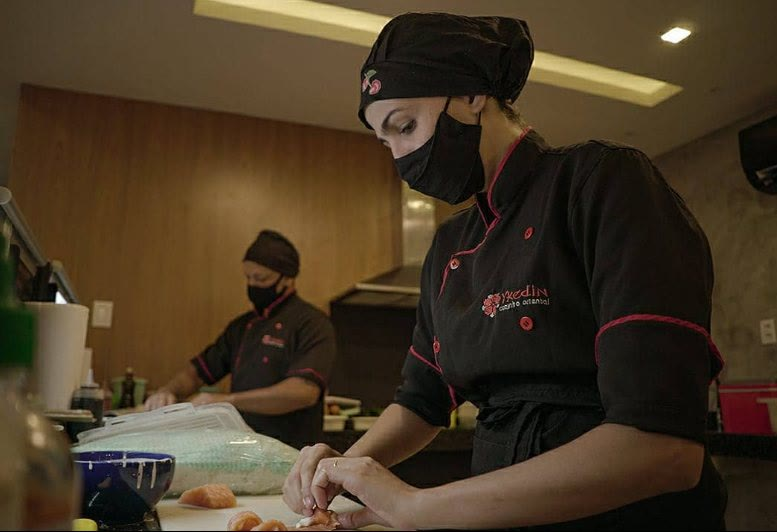
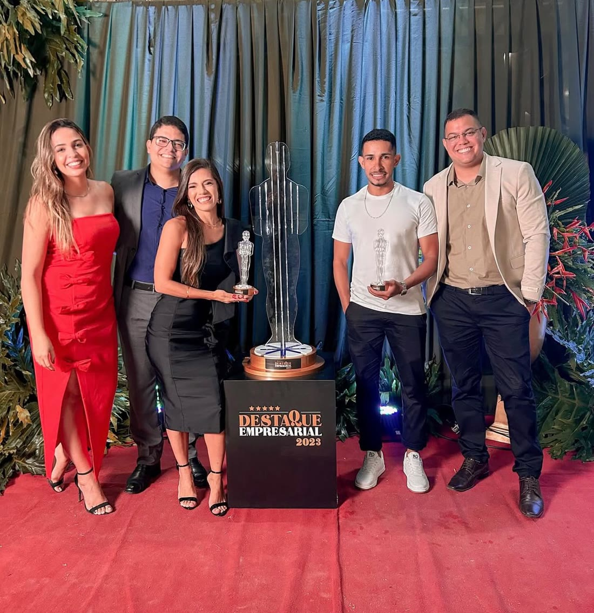
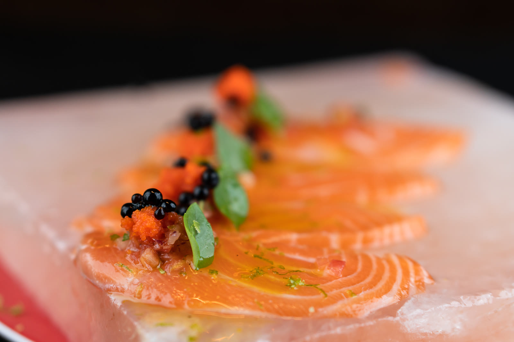
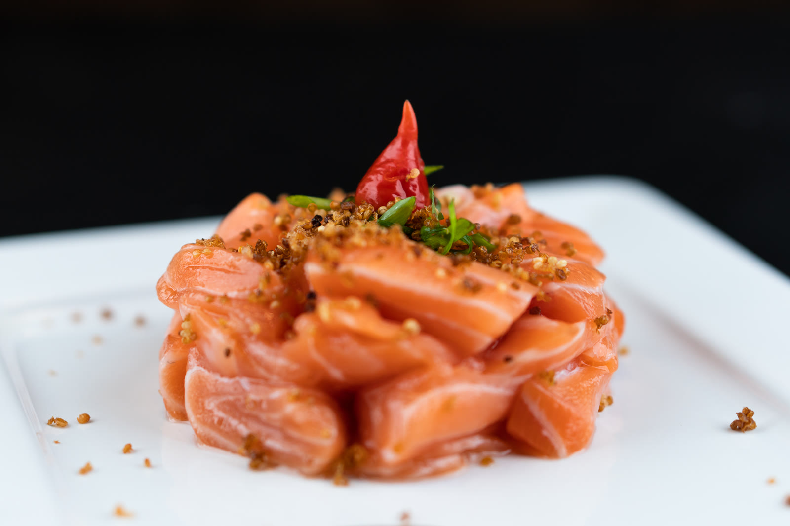
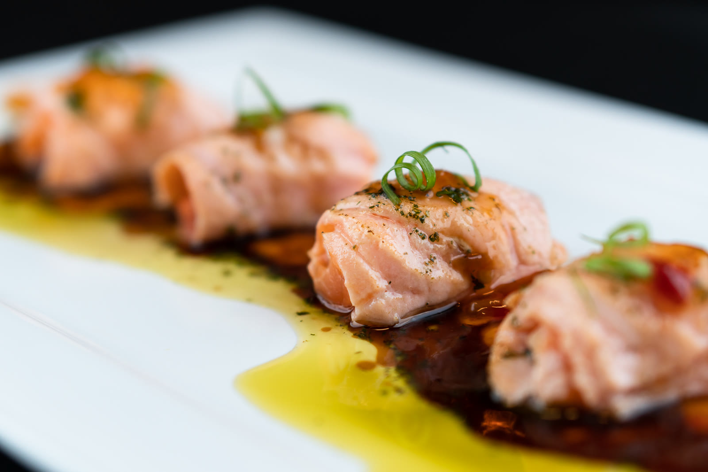
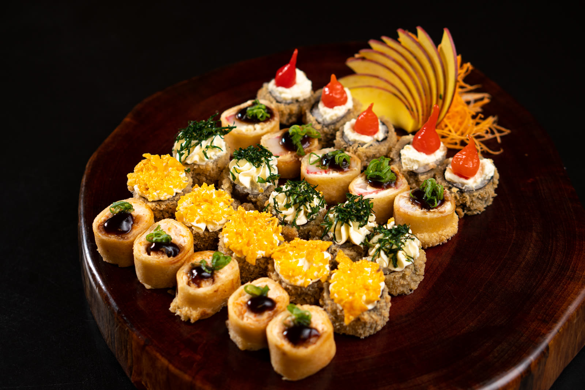
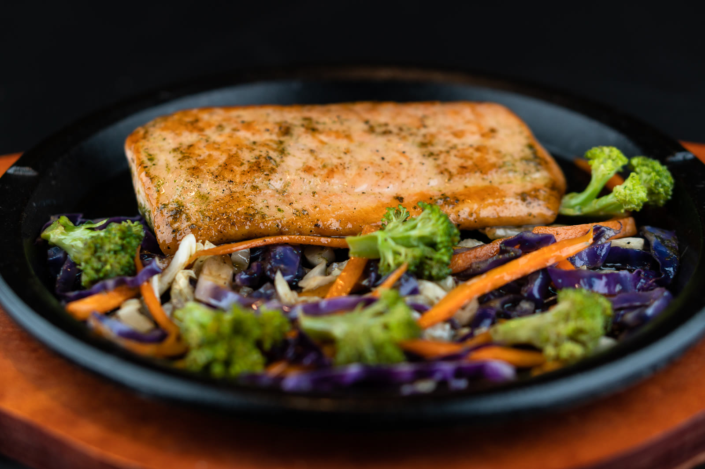
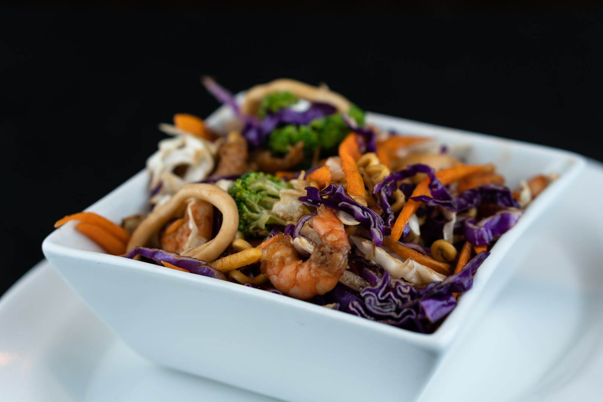
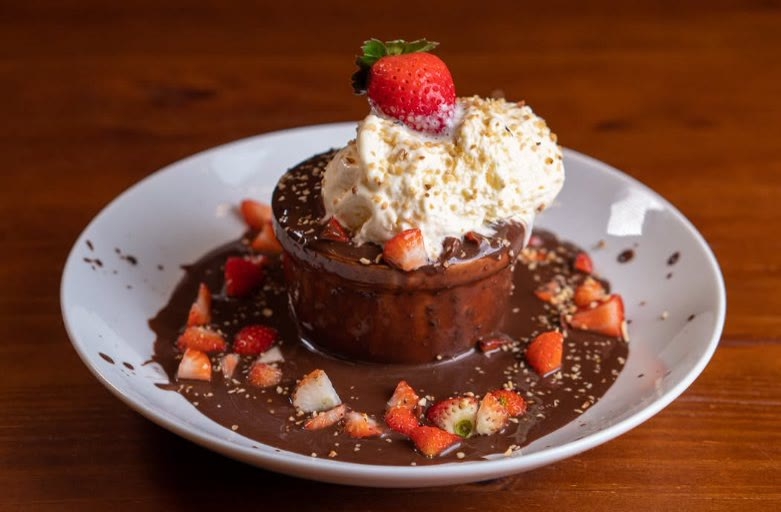

Jacobina
Horário de funcionamento- Endereço
- Rua Senador Pedro Lago, nº 61, Centro
Em frente ao banco Itaú · Jacobina, BA - Funcionamento
- Almoço: segunda a sexta, 11h30 às 14h30
Jantar: todos os dias, 18h às 23h - Telefone
- 74 98818-2796
Viva esse momento!
01Salmão grelhado na chapa
01.04.2016 · Jacobina, Bahia
O Ykedin foi inaugurado no dia 1º de abril de 2016 em Jacobina. A ideia era ousada para a época: trazer a gastronomia japonesa, ainda pouco conhecida na região, para o centro da cidade.
Começou como delivery e logo ganhou a cidade, com inovação, apresentação, tecnologia e um atendimento que faz a gente se sentir convidado.
“A inovação nunca foi apenas uma ferramenta. Sempre fez parte da maneira como o Ykedin pensa.”


Primeiro aplicativo próprio de delivery da região.
Primeiro restaurante com embalagens totalmente personalizadas.
Primeiro restaurante com site e cardápio online.
Pioneiro no autoatendimento por tablets nas mesas.







#vivaessemomento
Pista de voo livre de Jacobina & Restaurante Ykedin - 2017
Para cada momento
A flor é a nossa assinatura desde o primeiro dia. Segure e veja ela abrir.
Algumas histórias merecem uma mesa só para elas.
Os melhores momentos não precisam de grandes motivos.
Uma noite comum também pode virar um bom momento.
Pressione e segure a flor
Viva esse momento!
Fazer pedidoMais um ano de vida. Mais um momento para celebrar.
Seu combinado favorito, do jeito que você gosta.
Delivery
Nascemos como delivery, então levar o Ykedin até a sua casa é coisa que a gente faz desde o primeiro dia. O cuidado que você vê no salão vai junto em cada pedido.
Nossas unidades
Perguntas
Pelo botão Fazer pedido, que abre o nosso cardápio online, ou pelo WhatsApp 74 98818-2796. Vale para Jacobina e para Capim Grosso.
Esse é o nosso cuidado desde 2016. Nascemos como delivery e fomos o primeiro restaurante da região com embalagem totalmente personalizada, pensada para a experiência chegar inteira até você.
Em Jacobina: almoço de segunda a sexta, das 11h30 às 14h30, e jantar todos os dias, das 18h às 23h. Em Capim Grosso: jantar de terça a domingo, das 18h às 23h.
Tem. Hots, salmão grelhado na chapa, yakisoba e sobremesas, por exemplo. O cardápio online mostra tudo.
Pode, e a gente adora. Chame a unidade no WhatsApp para combinar os detalhes.